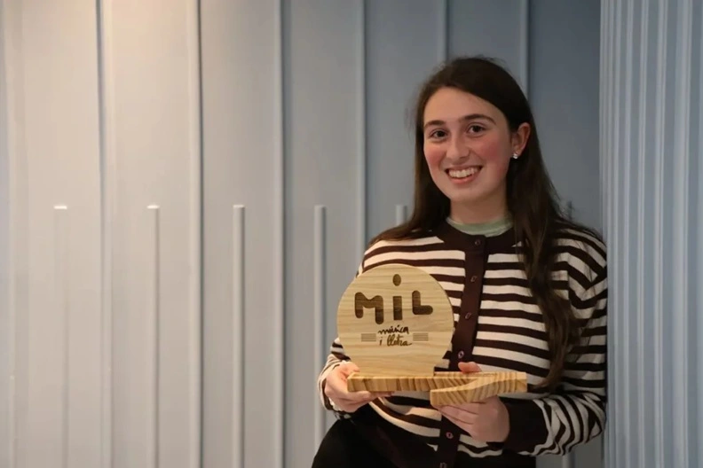
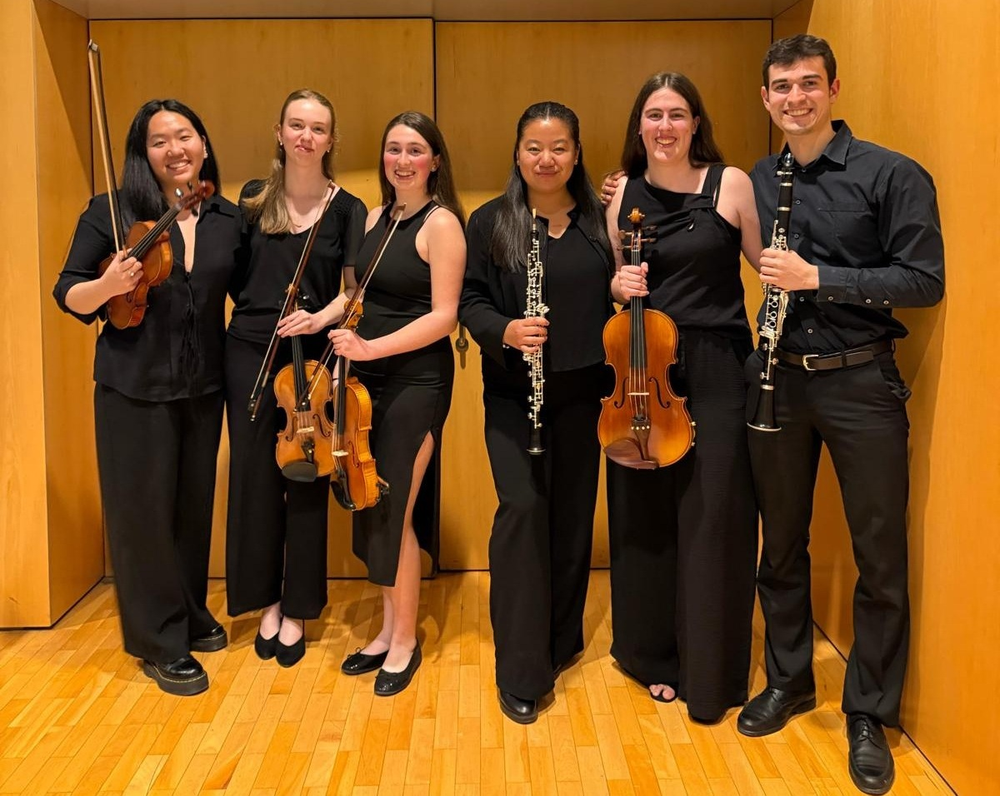
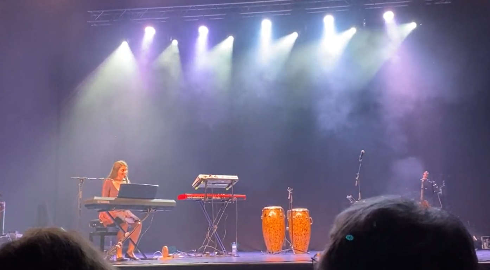
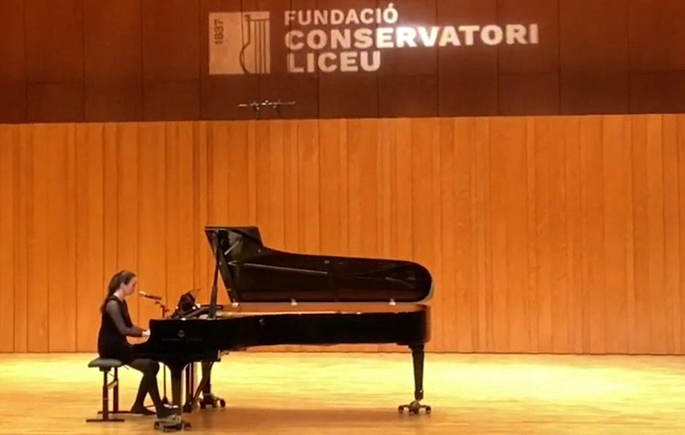
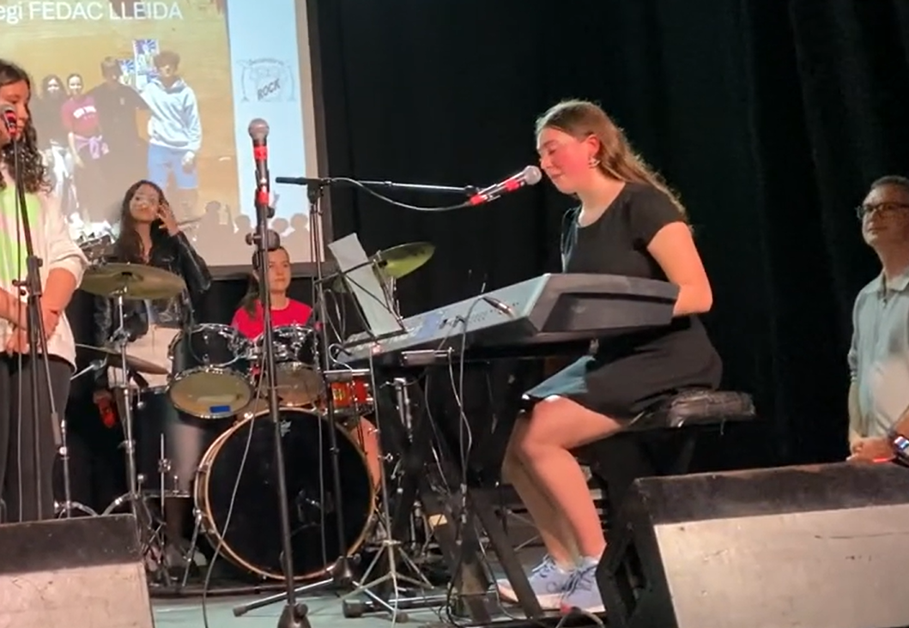
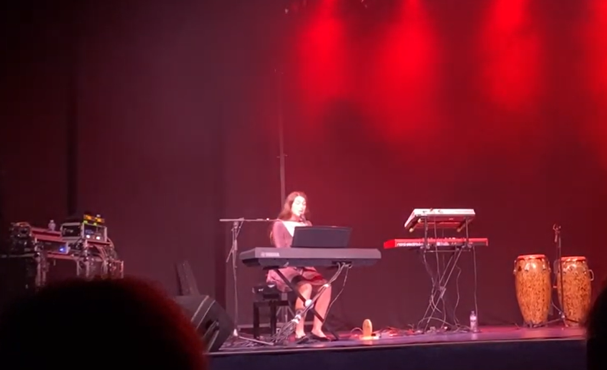
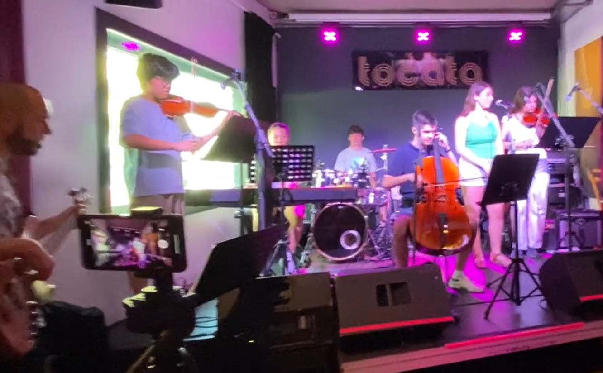

Ganadora Mil Descobreix 2025 Xàtiva, Valencia
Reconocimiento destacado dentro del ámbito de jóvenes talentos.
Interpretación · Creación · Voz
Una propuesta artística delicada, intensa y elegante, con una identidad contemporánea.

Biografía
Eva Montes inicia su formación musical a los 6 años con el violín, demostrando desde muy temprana edad un talento destacado que la lleva, a los 11 años, a comenzar a componer sus propias piezas. Su capacidad interpretativa sobresale tanto en violín como en piano, consolidándose como una joven música de gran versatilidad. A lo largo de su trayectoria ha formado parte de diversas formaciones orquestales de prestigio, como la Jove Orquestra de Ponent, la Orquestra Julià Carbonell, la Orquestra Simfònica Juvenil de Catalunya y la Orquestra En Clave de Arts, experiencias que han contribuido a su desarrollo artístico y escénico. En el ámbito creativo, ha sido reconocida durante tres años consecutivos con el premio de composición en el Certamen de Jóvenes Creadores del Liceu, consolidando su perfil como autora emergente. En 2025, su talento como cantautora fue también reconocido a nivel nacional al obtener el premio Mil Descobreix en Xàtiva. Además de su faceta instrumental y compositiva, cuenta con experiencia en el escenario interpretando sus propias canciones, explorando una amplia variedad de estilos que incluyen pop, rock, jazz y lírico, lo que refleja su gran sensibilidad artística y capacidad de adaptación.

Reconocimiento destacado dentro del ámbito de jóvenes talentos.
Ganadora del primer premio de la Asociación Legado Maestro Alonso por la interpretación de “Pilarcita”.
Participación y reconocimiento en el programa de jóvenes creadores vinculado al Liceu de Barcelona.
Reconocimiento obtenido en el concurso de jóvenes intérpretes musicales de Andorra.
Reconocimiento honorífico en la especialidad de canto lírico.
Premio internacional por su composición y su interpretación vocal.
Vídeos
Un viaje a través del liricismo, el jazz, el pop o el rock

Sant Anastasi 2026 - Auditorio Enric Granados de Lleida
Ver vídeo



Eventos
Conciertos, concursos, actuaciones especiales y próximas citas artísticas.
Plaza de la Paeria
Festival de Música al Carrer 2026
Contacto
Para colaboraciones, conciertos, concursos, prensa o propuestas artísticas, puedes añadir aquí tus datos de contacto y redes.